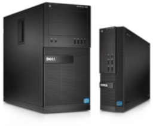

The Optiplex line was introduced in 1993. It is focused on Corporate, Healthcare, Governmental, and Education markets and is one of the most popular in its class. Optiplex computers typically come with Intel processors such as Celeron (at minimum), Pentium and i(x) Core
| Photo | Machine | Year Of Introduction | CPU | RAM | Hard Drive | Modem/Networking | Cache | Sound Card | GPU | Bundled Operating System | Bundled Software | Spec Sheet Sources | Notes |
|---|---|---|---|---|---|---|---|---|---|---|---|---|---|
|  | XE2 | 2014? | Intel 4th Generation Processor line (Includes i3 (Dual core), i5 and i7 (Quad core) | Supports up to 32GB Max RAM (Unknown base amount) | Up to 1TB HDD Supports Hybrid, Opal SED FIPS and SSD's Supports RAID 0 and 1 on some configurations Can also be used without a Hard Drive if Dell Cloud Desktop Diskless option is selected. |
Intel I217LM Ethernet 10/100/1000Mbit Optional PCIE 10/100/1000 Mbit network card Optional Wireless 802.11n Card |
Unknown | Unknown | Intel HD Graphics 4600 IGPU Optional AMD discreet graphics card |
Windows 8 Standard (64 Bit) Windows 8 Pro (64 Bit) Windows 7 Home Premium SP1 (64 Bit or 32 Bit) Windows 7 Professional SP1 (64 Bit or 32 Bit) Microsoft Windows 7 Ultimate SP1 (64 bit or 32 Bit) Microsoft Windows Embedded POSReady (Likely 2009, 7, or 8) Ubuntu (Likely 14.04 "Trusty Tahr" or 14.10 "Utopic Unicorn") |
Unknown | ||